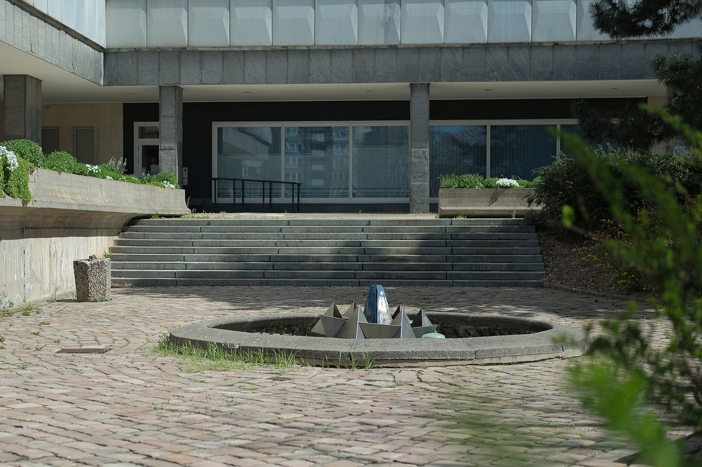

Recherche und Werkbeschreibung: Roman Pilz. Text und Fotografien wechseln sich wie in einem Magazin ab. Ein Klick auf ein Bild öffnet die Großansicht.
Der "Kristallbrunnen" war die bedeutendste öffentliche Auftragsarbeit des Metallgestalters Ralph Siebenborn zu DDR-Zeiten. Im Zuge der Planung und der Erbauung des zweiten Bauabschnitts des Hauses der Partei- und Staatsorgane des Bezirks von 1977 bis 1979 wurden von der Stadt auch Aufträge an Künstler und Gestalter vergeben, die Freifläche vor dem Gebäude an der Brückenstraße (damals Karl-Marx-Allee) und Mühlenstraße aufzuwerten.
Erst durch den W-förmigen Baukörper, der an den bereits 1971 fertiggestellten geraden Gebäudeteil mit der Schriftwand und dem Karl-Marx-Monument anschließt, erhielt das Gebäude den umgangssprachlichen Beinamen "Parteifalte". Der von Siebenborn entworfene Brunnen befindet sich vor dem Mittelteil des Gebäudes, zwischen den zwei spitz zur Brückenstraße ragenden Fassadenfronten.
Im Gegensatz zum repräsentativen, streng linearen Bereich vor dem Marx-Monument ist der Bereich um den Brunnen kleinteiliger und abwechslungsreicher gestaltet: Verschiedenartige Wege, Treppen und Beete mit kleineren und größeren Pflanzungen prägen diesen zentralen und zugleich geschützten Rückzugsort, der mit einem weiteren Teichbecken, Bänken und exotischen Bäumen geschmückt ist.
Siebenborn wurde bei der abstrakten Edelstahlplastik im Zentrum des runden Brunnenbeckens von Naturformen inspiriert: Die kreisförmig angeordneten, gleichmäßigen metallischen Tetraeder verbinden sich symmetrisch geordnet wie eine Kristallstruktur. Die Spitzen der Dreieckspyramiden zeigen im Wechsel nach unten und nach oben. Sie sind so gegeneinander verschoben, dass ihre Grundflächen in der Mitte der Seitenkanten aufliegen. Wie eine Krone schwebt das Gefüge über einem spitz zulaufenden Schaft, der aus dem Betonbecken aufsteigt.
Sicher wurden die Arbeiten des Künstlers auch von den Arbeiten des Chemnitzer Künstlers Johann Belz beeinflusst. Dieser hatte mit seinem "Klapperbrunnen" am Omnibusbahnhof und dem "Blütenstern" vor dem Hotel an der Stadthalle bereits Ende der 1960er und Anfang der 1970er Jahre vergleichbare abstrakte Metallkunstwerke geschaffen. Auf dem Brühl entstand zur selben Zeit ein ähnliches abstraktes Wasserspiel des Metallgestalter-Kollegen Reinhard Grütz (1938–2022).
Das Wasserspiel wurde von Siebenborn ebenfalls in seinen Entwurf mit einbezogen. Die Wasserfontänen sollten aus zahlreichen kleinen Düsen, die im Kreis unter dem Beckenrand verlaufen, auf den Kristall springen. Das Wasser trifft dann unterhalb des Kristallkranzes auf das blanke Metall, so dass dieser wie über einer nach unten absinkenden Kuppel aus sprühenden Strahlen zu ruhen scheint.
Der Künstler nahm bei seinem Entwurf auch Bezug auf die metallische Gebäudefassade aus geometrisch geformten Aluminiumblechen. Das Werk wurde 1980 fertiggestellt und in kollektiver Zusammenarbeit mit örtlichen Handwerkern und Werkstätten errichtet. Hinter den zwei markanten, fernöstlichen Laubbäumen und der auf dem Balkan heimischen Schwarz-Kiefer ist an der Treppe ein weiteres Kunstwerk des Chemnitzer Gestalters Clauss Dietel (1934–2022) zu finden.
Ralph Siebenborn (Künstlernahme: "7born") wurde 1947 in Heilbronn am Neckar geboren. Siebenborn absolvierte eine Ausbildung zum Stahlgraveur in Frankenberg/Sachsen. Anschließend studierte er von 1966 bis 1969 an der Fachschule für angewandte Kunst Schneeberg und von 1971 bis 1976 an der Hochschule für industrielle Formgestaltung Burg Giebichenstein (Halle).
Seit 1977 arbeitet der Künstler als freier Bildhauer und Metallgestalter – in Metall, Holz und Stein. Siebenborn schuf eine Reihe von Werken als Kunst am Bau und arbeitet auch mit Fundstücken. Er beteiligte sich an verschiedenen Bildhauersymposien und ist Mitglied des Chemnitzer Künstlerbundes.
Der Künstler schuf eine Reihe von Werken für den öffentlichen Raum von Chemnitz. Am markantesten ist die mehrteilige Plastik "7 magere und 7 fette Jahre" beidseitig der Chemnitzer Markthalle. Weitere Arbeiten in öffentlichem und privatem Besitz befinden sich zum Beispiel in einem Fußgängerbereich im Stadtteil Sonnenberg und in einer Wohnanlage nahe des Luisenplatzes.
Ralph Siebenborn wirkte lange Zeit in Chemnitz. Heute lebt und arbeitet er in Pobershau im Erzgebirge.
Ralph Siebenborn (Künstlernahme: "7born") wurde 1947 in Heilbronn am Neckar geboren. Siebenborn absolvierte eine Ausbildung zum Stahlgraveur in Frankenberg/Sachsen. Anschließend studierte er von 1966 bis 1969 an der Fachschule für angewandte Kunst Schneeberg und von 1971 bis 1976 an der Hochschule für industrielle Formgestaltung Burg Giebichenstein (Halle).
Seit 1977 arbeitet der Künstler als freier Bildhauer und Metallgestalter – in Metall, Holz und Stein. Siebenborn schuf eine Reihe von Werken als Kunst am Bau und arbeitet auch mit Fundstücken. Er beteiligte sich an verschiedenen Bildhauersymposien und ist Mitglied des Chemnitzer Künstlerbundes.
Der Künstler schuf eine Reihe von Werken für den öffentlichen Raum von Chemnitz. Am markantesten ist die mehrteilige Plastik "7 magere und 7 fette Jahre" beidseitig der Chemnitzer Markthalle. Weitere Arbeiten in öffentlichem und privatem Besitz befinden sich zum Beispiel in einem Fußgängerbereich im Stadtteil Sonnenberg und in einer Wohnanlage nahe des Luisenplatzes.
Ralph Siebenborn wirkte lange Zeit in Chemnitz. Heute lebt und arbeitet er in Pobershau im Erzgebirge.
